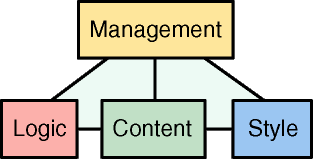

|
|
|
|
Apache Cocoon is an XML publishing framework that raises the usage of
XML and XSLT technologies for server applications to a new
level. Designed for performance and scalability around pipelined SAX
processing, Cocoon offers a flexible environment based on the separation
of concerns between content, logic and style. A centralized
configuration system and sophisticated caching top this all off and help
you to create, deploy and maintain rock-solid XML server applications.
Cocoon interacts with most data sources, including: filesystems, RDBMS,
LDAP, native XML databases, and network-based data sources. It adapts
content delivery to the capabilities of different devices like HTML, WML,
PDF, SVG, RTF just to name a few. Cocoon currently runs as a Servlet or
from a powerful commandline interface. The chosen design of an abstracted
environment gives you the freedom to implement your own concrete
environment to suit your required functionality.
Apache Cocoon 2.0.1 is the latest release of the XML publishing framework.
If you are looking for Cocoon 1 go here.
This documentation is not complete because documentation is never complete anyway. However the current
release is stable and tested thoroughly and you'll find lots of samples which show and explain
the power of Apache Cocoon 2.0.1. We welcome you into this new world of XML wonders :-)
Technologies like Extensible Server Pages (XSP) and the Action framework gives
you all the power to add your own logic into the building process of your resources
and services you want Cocoon to be able to perform.
|
|
The Cocoon Project will evidence its new course with a new logo that was
designed by Cocoon's creator Stefano Mazzocchi. Here it is:
|
|
The Cocoon Project has gone a long way since its creation on
January 1999. It started as a simple servlet for static XSL styling and became
more and more powerful as new features were added. Unfortunately, design
decisions made early in the project influenced its evolution. Today, some of
those constraints that shaped the project were modified as XML standards have evolved and
solidified. For this reason, those design decisions need to be reconsidered
under this new light.
While Cocoon started as a small step in the direction of a new
web publishing idea based on better design patterns and reviewed estimations
of management issues, the technology used was not mature enough for tools to
emerge. Today, most web engineers consider XML as the key for an improved web
model and web site managers see XML as a way to reduce costs and ease
production.
In an era where services rather than software will be key for
economic success, a better and less expensive model for web publishing will
be a winner, especially if based on open standards.
|
 |  |  |
| Passive APIs vs. Active APIs | |
 | |  |
|
Web serving environments must be fast and scalable to be
useful. Cocoon 1 was born as a "proof of concept" rather than
production software and had significant design restrictions, based mainly on
the availability of freely redistributable tools. Other issues were lack of
detailed knowledge on the APIs available as well as underestimation of the
project success, being created as a way to learn XSL rather than a full
publishing system capable of taking care of all XML web publishing needs.
For the above reasons, Cocoon 1 was based on the DOM level 1
API which is a passive API and was intended mainly for client side
operation. This is mainly due to the fact that most DOM
implementations require the document to reside in memory. While this is
practical for small documents and thus good for the "proof of
concept" stage, it is now considered a main design constraint for Cocoon
scalability.
Since the goal of Cocoon is the ability to process
simultaneously multiple 100Mb documents in JVM with a few Mbs of heap size,
careful memory use and tuning of internal components is a key issue. To reach
this goal, an improved API model was needed. This is now identified in the SAX
API which is, unlike DOM, event based (so active, in the sense that its
design is based on the inversion of control principle).
The event model allows document generators to trigger events that get handled
by the various processing stages and finally get
serialized onto the response stream. This has a significant impact on both
performance (effective and user perceived) and memory needs:
Incremental operation -
The response is created during document production.
Client's perceived performance is dramatically
improved since clients can start receiving data as soon as it is created,
not after all processing stages have been performed. In those cases where
incremental operation is not possible (for example, element sorting),
internal buffers store the events until the operation can be performed.
However, even in these cases performance can be increased with the use of
tuned memory structures.
Lowered memory consumption -
Since most of the
server processing required in Cocoon is incremental, an incremental model
allows XML production events to be transformed directly into output events
and character written on streams, thus avoiding the need to store them in
memory.
Easier scalability -
Reduced memory needs allow a greater number of
concurrent operations to take place simultaneously, thus allowing the
publishing system to scale as the load increases.
More optimizable code model -
Modern virtual machines are based on the idea of hotspots,
code fragments that are used often and, if optimized, increase the process
execution speed by large amounts.
This new event model allows easier detection of hotspots since it is a
method driven operation, rather than a memory driven one. Hot methods can
be identified earlier and can be better optimized.
Reduced garbage collection -
Even the most advanced
and lightweight DOM implementation require at least three to five times
(and sometimes much more than this) more memory than the original document
size. This not only reduces the scalability of the operation, but also
impacts overall performance by increasing the amount of memory garbage that
must be collected, tying up CPU cycles. Even if modern
virtual machines have reduced the overhead of garbage collection,
less garbage will always benefit performance and scalability.
The above points alone would be enough for the Cocoon
paradigm shift, even if this event based model impacts not only the general
architecture of the publishing system but also its internal processing
components such as XSLT processing and PDF formatting. These components will
require substantial work and maybe design reconsideration to be able to follow
a pure event-based model. The Cocoon Project will work closely with the other
component projects to be able to influence their operation in this direction.
|
|
Another design choice that should be revised is the reactor
pattern that was introduced to allow components to be connected in more
flexible way. In fact, by contrast to the fixed pipe model used up to Cocoon
1.3.1, the reactor approach allows components to be dynamically connected,
depending on reaction instructions introduced inside the documents.
While this at first seemed a very advanced and highly
appealing model, it turned out to be a very dangerous approach. The first
concern is mainly technical: porting the reactor pattern under an event-based
model requires limitations and tradeoffs since the generated events must be
cached until a reaction instruction is encountered.
But even if the technical difficulties could be solved, a key limitation
remains: there is no single point of management.
|
| | |
| Management Considerations | |
| | |
|
The web was created to reduce information management costs by
distributing them back on information owners. While this model is great for
user communities (scientists, students, employees, or people in general) each
of them managing small amount of personal information, it becomes impractical
for highly centralized information systems where distributed management
is simply not practical.
While in the HTML web model the page format and URL names
were the only necessary contracts between individuals to create a world wide
web, in more structured information systems the number of contracts increases
by a significant factor due to the need of coherence between the
hosted information: common style, common design issues, common languages,
server side logic integration, data validation, etc...
It is only under this light that XML and its web model reveal
their power: the HTML web model had too little in the way of contracts to be
able to develop a structured and more coherent distributed information system,
a reason that is mainly imposed by the lack of good and algorithmically certain
information indexing and knowledge seeking systems. Lacks that tend to degrade
the quality of the truly distributed web in favor of more structured web sites
(that based their improved site structure on internal contracts).
The simplification and engineering of web site management is
considered one of the most important Cocoon goals. This is done mainly by
technologically imposing a reduced number of contracts and placing them in a
hierarchical shape, suitable for replacing current high-structure web site
management models.
The model that Cocoon adopts is the "pyramid model of
web contracts" which is outlined in the picture below

and is composed by four different working contexts (the rectangles)
Management -
The people that decide what the site should
contain, how it should behave and how it should appear
Content -
The people responsible for writing, owning and managing
the site content. This context may contain several sub-contexts -
one for each language used to express page content.
Logic -
The people responsible for integration with dynamic
content generation technologies and database systems.
Style -
The people responsible for information
presentation, look & feel, site graphics and its maintenance.
and five contracts (the lines)
- management - content
- management - logic
- management - style
- content - logic
- content - style
Note that there is no logic - style contract. Cocoon aims to
provide both software and guidelines to allow you to remove such a
contract.
|
| | |
| Overlapping contexts and Chain Mapping | |
| | |
|
The above model can be applied only if the different contexts
never overlap, otherwise there is no chance of having a single management
point. For example, if the W3C-recommended method to link stylesheets to XML
documents is used, the content and style contexts overlap and it's impossible
to change the styling behavior of the document without changing it. The same
is true for the processing instructions used by the Cocoon 1 reactor to drive
the page processing: each stage specifies the next stage to determine the result,
thus increasing management and debugging complexity. Another overlapping in
context contracts is the need for URL-encoded parameters to drive the page output.
These overlaps break the pyramid model and increase the management costs.
Starting with Version 2.0, the reactor pattern has been abandoned in favor of
a pipeline mapping technique. This is based on the fact that the number of
different contracts is limited even for big sites and grows with a rate
that is normally much less than its size.
Also, for performance reasons, Cocoon tries to compile
everything that is possibly compilable (pages/XSP into generators, stylesheets
into transformers, etc...) so, in this new model, the processing chain
that generates the page contains (in a direct executable form) all the
information/logic that handles the requested resource to generate its
response.
This means that instead of using event-driven request-time DTD interpretation
(done in all Cocoon 1 processors), these are compiled into transformers
directly (XSLT stylesheet compilation) or compiled into generators using
logicsheets and XSP which will remove totally the need for request-time
interpretation solutions like DCP that has been removed.
 | Some of these features were already present in latest Cocoon 1.x
releases but now the Cocoon architecture makes them central to its new
core. |
|
|
In Cocoon terminology, a sitemap is the collection of pipeline
matching informations that allow the Cocoon engine to associate the requested
URI to the proper response-producing pipeline.
The sitemap physically represents the central repository for web site
administration, where the URI space and its handling is maintained.
Please, take a look at the sitemap documentation
for more information on this.
|
|
The cache system of Cocoon has a very flexible and powerful design.
The algorithms and components used are not hard-wired to the core
of Cocoon. Instead they are dynamically configurable.
The cache system automatically checks for valid cached content and
delivers the valid content directly from the cache without any
pipeline processing.
The issue regarding static file caching that, no matter what, will
always be slower than direct web server caching, means that Cocoon tries
to be as proxy friendly as possible.
To be able to put most of the static part of the job back on the web
server (where it belongs), Cocoon provides a command line
operation, allowing the creation of site makefiles that will
automatically scan the web site and the source documents and will provide a
way to regenerate the static part of a web site (images and tables
included!) based on the same XML model used in the dynamic operation version.
|
|
|